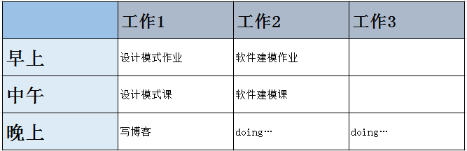

There are two classes today. I was going to write the observer model, but I didn't do the design model and
modeling homework. I got up late again in the morning, so I did my homework in the morning.In the noon class
, in the evening inexplicable special disgust summarizes the design pattern and my-insights this column also
does not have any documents, looks ugly. So temporary Change to write a diary. Well, this is not good.After
that, I need to get up at 8 o'clock every day, alarm clock and go to bed early.
Timetable:
